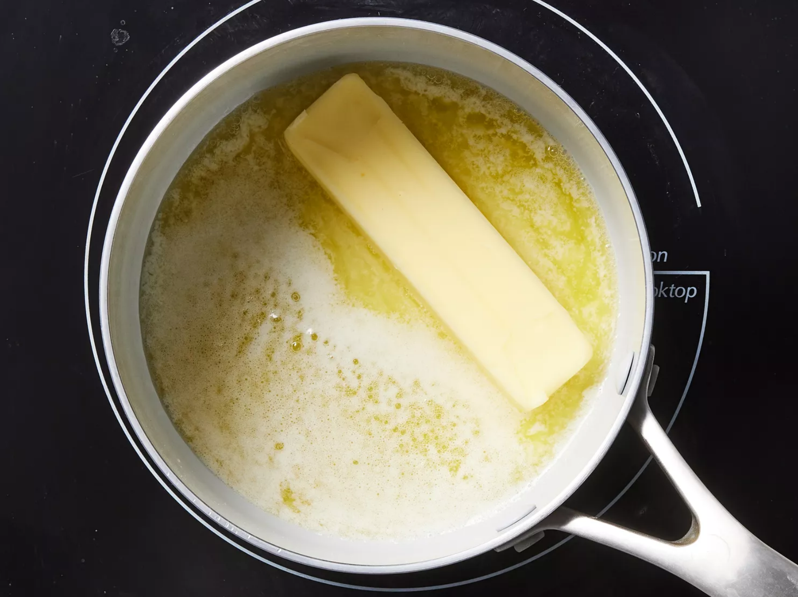

Do you want a steak that is:
- Juicy?
- Firm, but tender?
- Succulent?
Then I have the recipe for you!
Here is my favourite recipe from allrecipes
This steak has a melt-in-your-mouth experience.
If you are wanting a little treat at the end of the week, make sure you add the garlic butter.
These are the most important ingredients:
- Thick beef sirloin steak.
- 4 Cloves of minced garlic.
- 2 Teaspoons of garlic powder(love garlic)
- Salt and peppper to taste.
Step 1
Gather all ingredients. Preheat your outdoor or indoor grill for high heat and lightly oil the grates. 
Step 2
Melt butter in a small saucepan over medium to low heat.
Step 3
Stir in the minced garlic and the garlic powder.
Step 4
Season both sides of the steak as desired. 
Step 5
Place steaks on the preheated grill and cook 4 to 5 minutes on each side. An instant-read thermometer inserted into the center should read your desired doneness. Refer to the chart below if you are unsure.
| Doneness | Temperature(Fahrenheit) | Temperature(Celsius) |
|---|---|---|
| Rare | 110 Degrees | 43 Degrees |
| Medium Rare | 120 Degrees | 49 Degrees |
| Medium | 130 Degrees | 54 Degrees |
| Well Done(garbage) | How could you? | Make a new one. |
Transfer the steaks to warm plates, then brush the tops with as much garlic butter as you can handle and allow it to rest for 2 to 3 minutes.